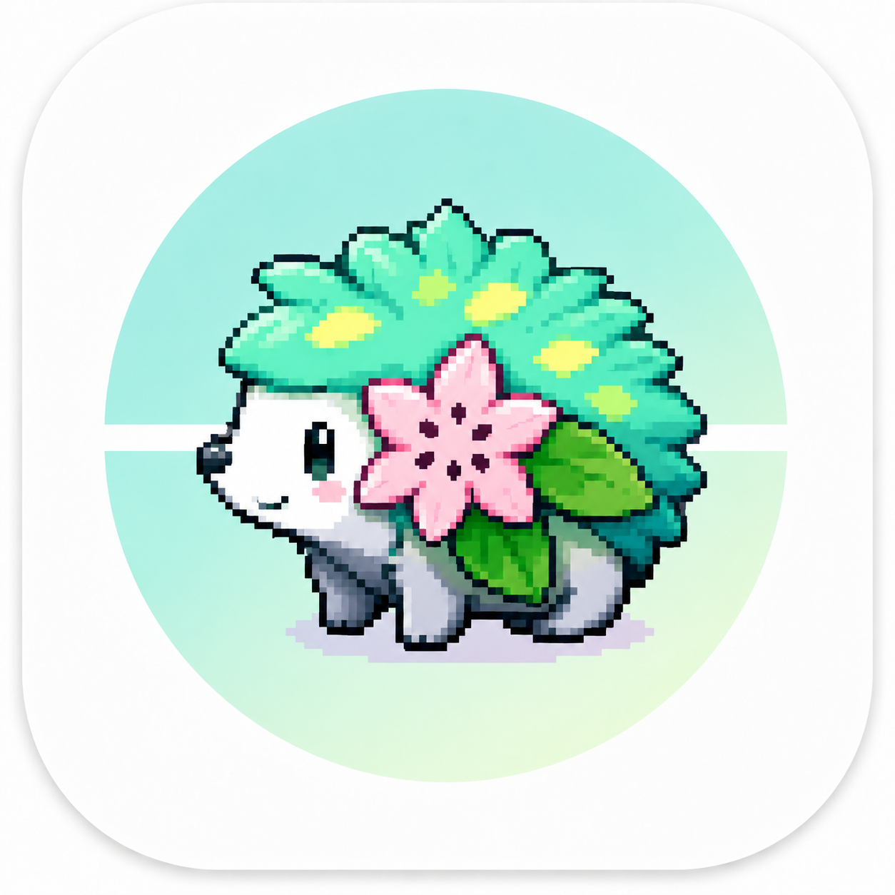

从创建机器人，到收到第一条通知
每完成一步，再点击下一步。准备好用于登录的 QQ 账号，跟随页面取得 AppID 和 AppSecret。
完成后
凭据准备好之后
在「QQ 通知测试工具」中填入 AppID 和 AppSecret，点击「验证凭据」。
点击「绑定私聊」，在 QQ 中向机器人发送顶部的 6 位验证码；绑定群聊时，先把机器人加入目标群，再在群内 @机器人发送验证码。
选择私聊、群聊或同时发送，点击「发送测试通知」，默认发送文字和软件 Logo 图片。到 QQ 确认文字、图片都已收到，才算通过图文通知测试。
验证码显示后有 60 秒有效时间。绑定成功会自动填入并保存 OpenID；无需手动查找 QQ 号或群号。
在开放平台检查该机器人的「服务范围」和「开发体验号码设置」，确认当前 QQ 用户或群属于允许使用的范围。绑定需接收 WebSocket 事件，发送失败时请查看工具日志中的 HTTP 状态码和平台错误信息。
当前浏览器未启用 JavaScript，请打开完整图文教程查看全部步骤。
可切换原始尺寸查看细节，按 Esc 关闭。